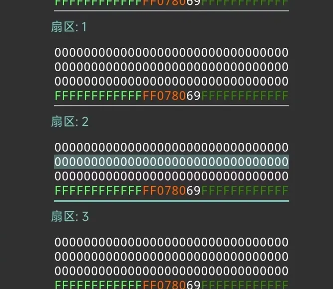
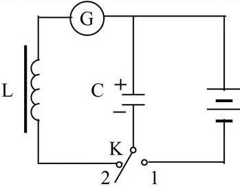

沂水一中校园卡破解
注意：所有步骤请不要轻易尝试，目前仍处于测试阶段（因为出了问题我负责不了，我还怕我的出了问题）
测试阻塞中：没有nfc读写器而且家里没有有nfc功能的手机（大悲）
如果你完成了测试项中的某一项内容或者你是计算机或者嵌入式大牛，请尽快与我取得联系，email： femd.eu.org（开启了catch-all模式，你可以从任意一个地方联系到我，比如 666@femd.eu.org 或者 sife@femd.eu.org ）
或者使用下方留言框发送文本消息
为了兼容性本页面使用了超级难看的界面
如果你感觉开发者破解的真LJ就快来2023级与破解者对线
测试项
测试阶段一览表
|
|
测试点名称
|
测试状态
|
可能出现的bug
|
上表中测试未完成的东西
补卡是否补全余额
直接改余额后或者改卡号的可行性与风险
如果你的手机支持nfc，请下载下方软件（2MB），设置中开启nfc，软件里选择读数据，勾选所有密钥后把卡片贴在手机背部靠上的地方，并使用长截屏（不能长截屏的话就要每个扇区截一次图，不要漏截图或者截不全）截图后将图片（最好是使用软件1内置保存功能保存文件）发给我（具体细节参考NFC工具Mifare Classic Tool（MCT）自用复制教程）效果如下图
完成以上测试中任意一个的大牛可以进入贡献者名单
沂水一中校园卡原理详解

一中的校园卡是IC卡的一种，其实有一个由电感线圈L和电容C构成的LC振荡电路。而读卡器，可以向外发射特定频率的电磁波。当你掏出校园卡，并靠近读卡器的时候，校园卡里面的线圈L受到电磁波的影响，就会产生感应电流，给电容C充电，达到一定电压后，卡内的芯片就会凭借这些电能，再向读卡器发送高频电磁波，将存储在芯片中的信息传输给读卡器。读卡器在接收到信息后，再将它与中心服务器的数据进行比对，比对成功后再进行数据处理。这类卡与读卡设备相互“通讯”的技术，被称作“射频识别”（细节自行百度）。
俗话说得好，“来钱最快的方法都写在刑法里”，在此建议大家了解一下某新闻“大学生破解一知名高校一卡通充值系统，白吃白喝两年被刑拘”。知识使用不规范，亲人两行泪。请大家还是好好学习，天天向上。
一中校园卡系统是有联网数据库的（未知，需要有勇士补办一张卡看看能不能补余额），这样的卡不要改了如果严重的可以进局子。如果补办时余额不能补的基本上都是不联网的卡。
另外也可以观察卡机，如果只有一条电源线的数据库不会联网，如果卡机线有多条或者很粗就不要乱改了。
卡片付费流程：
1.卡片接触刷卡机，刷卡机会验证0号扇区的身份有效性以及验证余额。
2.扣除相应费用并记录交易记录，此时可能产生bug，如果私自修改余额可能导致与服务器账单不对应。
卡片充值流程：
根据皖西学院的一些规定以及其他学校的一些说明，校园卡充值后会在下一次刷卡时充值到卡上。
破解安全性考虑
直接改余额的操作风险巨大，随时会面临封卡或者崩坏服务系统的危险
将自己的卡改为别人的卡可能会有以下问题：
1.需要提前知道目标卡的余额，否则会发生和改余额一样的风险
2.无法和目标卡牌的数据同步（除非你是个疯子，每天盯着他怎么消费然后对应修改余额使得风险为0）
篡改流程
软件:安装MIFARE Classic Tool （或者可以自己写一个NFC调用API）
注意：需要支持NFC功能的手机或设备
具体破解细节需要nfc设备到手后再分析一中卡的UID和扇区数据以及破解操作（目前不透露）
目前方案
金额修改：最基础的功能，买完饭后余额是一个唯一的特殊值，定位其二进制偏移量非常简单，修改也简单
卡号修改：从低成本的角度考虑，如果一中是UID卡就万事大吉了，可以随便修改，但是如果是M1卡就需要PM9等专业设备来进行复制和篡改（need 30大洋）
生成无穷卡：不要想了，没人敢这么作
Contributors/贡献者名单
Sife（开发、破解和维护者）
图片及参考资料来源：
[1]刘志刚.基于RFID的M1卡安全防护技术研究[D].哈尔滨：哈尔滨工程大学，2017：2-4.
[2]Anonymous.Mentor Graphics; Mentor Graphics Announces Partnership with NXP Semiconductors for Design-for-Test Tools and Technology[J].Electronics Business Journal,2008.
[3]https://www.zhihu.com/question/54475564(2021.4.2)
[4]https://zhuanlan.zhihu.com/p/137458049
[5]https://www.sohu.com/a/247541301_549202